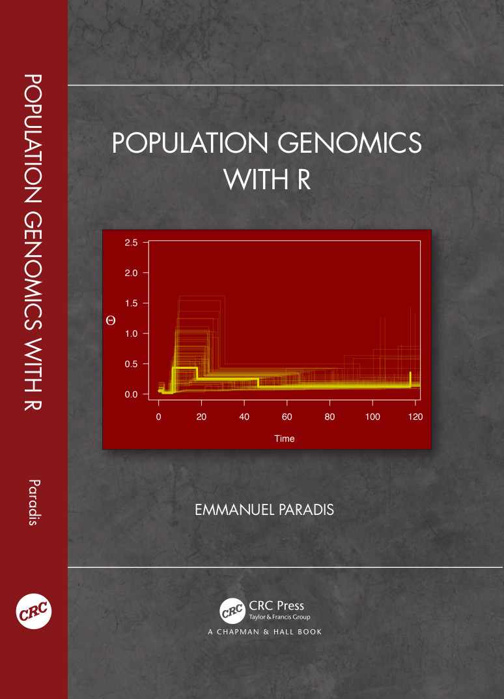

☰

The page on CRC Press's Web site is
HERE
.
Review:
Daniel Fischer. 2022.
International Statistical Review
90 (1):
184–185. DOI:
10.1111/insr.12493
All R commands from the book including the case studies:
R_code_PGR.R
The file
geo_droso.txt
with information on geographical origins of the samples of fruit flies (Case study 2).
A
list of errata
.
Some
news about the packages
discussed in the book.
Updated: 14 April 2023
Crédits